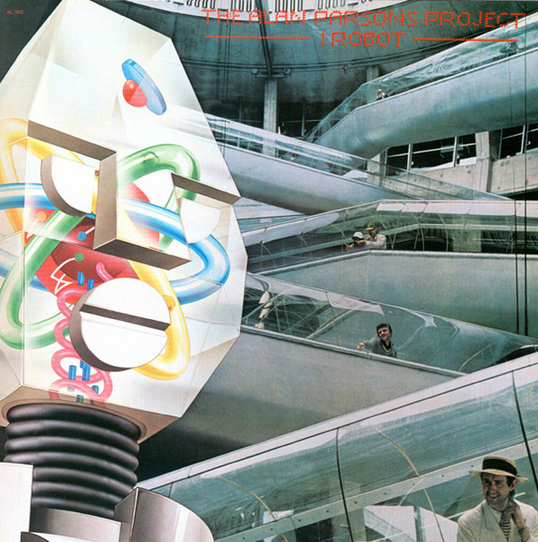

LP
I Robot
The Alan Parsons Project
Media: VG+ · Sleeve: VG+
CA$40.00
Discogs SuggestedCA$37.26
Discogs MedianCA$37.26
Discogs HighCA$37.26
- Physical Copy ID
- BB-LP-004
- Year
- 1977
- Label
- Arista, Arista
- Catalog #
- AL 7002, 7002
- Country
- CACanada
- Genre / Style
- Rock · Prog Rock